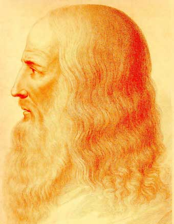

Considerado el paradigma del homo universalis, del sabio renacentista versado en todos los ámbitos del conocimiento humano, Leonardo da Vinci (1452-1519) incursionó en campos tan variados como la aerodinámica, la hidráulica, la anatomía, la botánica, la pintura, la escultura y la arquitectura, entre otros. Sus investigaciones científicas fueron, en gran medida, olvidadas y minusvaloradas por sus contemporáneos; su producción pictórica, en cambio, fue de inmediato reconocida como la de un maestro capaz de materializar el ideal de belleza en obras de turbadora sugestión y delicada poesía.

Recreación de un retrato de Leonardo
En el plano artístico, Leonardo conforma, junto con Miguel Ángel y Rafael, la tríada de los grandes maestros del Cinquecento, y, pese a la parquedad de su obra, la historia de la pintura lo cuenta entre sus mayores genios. Por los demás, es posible que de la poderosa fascinación que suscitan sus obras maestras (con La Gioconda a la cabeza) proceda aquella otra fascinación en torno a su figura que no ha cesado de crecer con los siglos, alimentada por los múltiples enigmas que envuelven su biografía, algunos de ellos triviales, como la escritura de derecha a izquierda, y otros ciertamente inquietantes, como aquellas visionarias invenciones cinco siglos adelantadas a su tiempo.
Juventud y descubrimientos técnicos
Leonardo nació en 1452 en la villa toscana de Vinci, hijo natural de una campesina, Caterina (que se casó poco después con un artesano de la región), y de Ser Piero, un rico notario florentino. Italia era entonces un mosaico de ciudades-estado como Florencia, pequeñas repúblicas como Venecia y feudos bajo el poder de los príncipes o el papa. El Imperio romano de Oriente cayó en 1453 ante los turcos y apenas sobrevivía aún, muy reducido, el Sacro Imperio Romano Germánico; era una época violenta en la que, sin embargo, el esplendor de las cortes no tenía límites.
A pesar de que su padre se casaría cuatro veces, sólo tuvo hijos (once en total, con los que Leonardo entablaría pleitos por la herencia paterna) en sus dos últimos matrimonios, por lo que el pequeño Leonardo se crió como hijo único. Su enorme curiosidad se manifestó tempranamente: ya en la infancia dibujaba animales mitológicos de su propia invención, inspirados en una profunda observación del entorno natural en el que creció. Giorgio Vasari, su primer biógrafo, relata cómo el genio de Leonardo, siendo aún un niño, creó un escudo de Medusa con dragones que aterrorizó a su padre cuando se topó con él por sorpresa.
Consciente del talento de su hijo, su padre le permitió ingresar como aprendiz en el taller de Andrea del Verrocchio. A lo largo de los seis años que el gremio de pintores prescribía como instrucción antes de ser reconocido como artista libre, Leonardo aprendió pintura, escultura y técnicas y mecánicas de la creación artística. El primer trabajo suyo del que se tiene certera noticia fue la construcción de la esfera de cobre proyectada por Brunelleschi para coronar la iglesia de Santa Maria dei Fiori. Junto al taller de Verrocchio, además, se encontraba el de Antonio Pollaiuolo, en donde Leonardo hizo sus primeros estudios de anatomía y, quizá, se inició también en el conocimiento del latín y el griego.
Joven agraciado y vigoroso, Leonardo había heredado la fuerza física de la estirpe de su padre; es muy probable que fuera el modelo para la cabeza de San Miguel en el cuadro de Verrocchio Tobías y el ángel, de finos y bellos rasgos. Por lo demás, su gran imaginación creativa y la temprana pericia de su pincel no tardaron en superar a las de su maestro. En el Bautismo de Cristo, por ejemplo, los inspirados ángeles pintados por Leonardo contrastan con la brusquedad del Bautista hecho por Verrocchio.
Para leer más Leonardo da Vinci puedes dirigirte a la página de web biografiasyvidas.com